Ali - Meridian Athletic Club started as a single cricket ground and a simple idea: that a small club, run properly, could compete with anyone. Twenty-one years on, that idea now spans six sports and a growing community of athletes.
Ali - Meridian Athletic Club was founded in 2007 by a small group of former district-level cricketers who leased a single turf ground on the edge of Kurnool and began coaching local youth on weekends. What started as informal nets sessions grew into a structured cricket academy within three years.
Football and Basketball followed as members asked for more ways to train through the off-season. Badminton arrived in 2010 with the construction of our indoor arena, Golf was added in 2012 through a coaching partnership with a nearby course, and Cycling became our sixth discipline in 2015 as road riding grew popular among senior members.
Today, Meridian fields competitive teams across all six sports, runs a full junior development pathway, and remains member-owned in spirit: a club built by athletes, for athletes.
Club founded with a single cricket turf ground
Football, Swimming and Badminton programmes launched
Golf and Bike racing complete the six-sport line-up
260+ active members and 38 club trophies across all sports
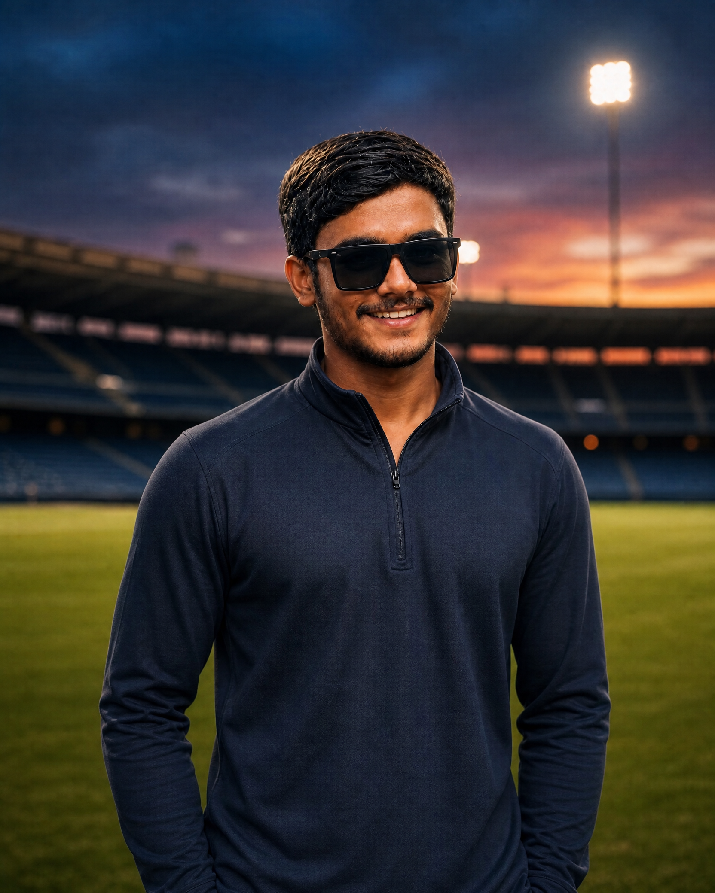
Ali - Meridian Athletic Club was founded with a simple belief: sport is not only about competition, but also about discipline, character, teamwork and community.
Our goal is to create an environment where athletes of every level can train with purpose, compete with confidence and continue to grow both on and off the field.
Sport builds more than athletes. It builds discipline, confidence and a community that grows together.
To be the most respected multi-sport club in the region — known as much for how it develops people as for the titles it wins.
To give every member, from first-timers to first-team athletes, structured coaching, genuine competition, and a club they're proud to belong to.
We train with discipline, compete with respect, and measure success by how far every athlete has grown, not just the scoreboard.
Every facility at Meridian is shared across programmes so athletes across all six sports train on courts and grounds maintained to the same standard.
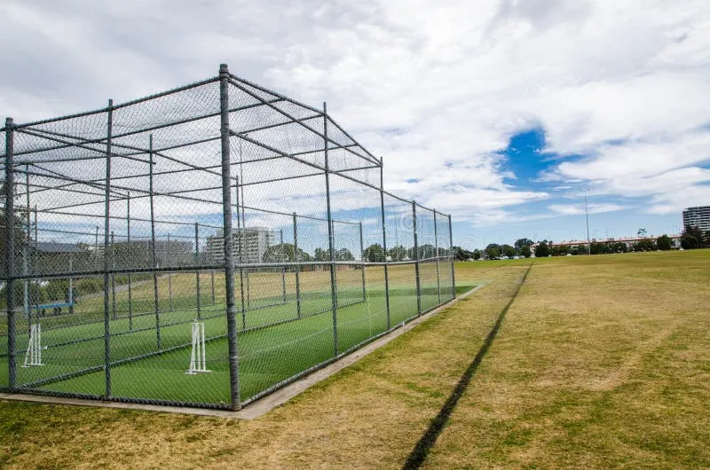
Full-size turf pitch with practice nets and a covered pavilion.
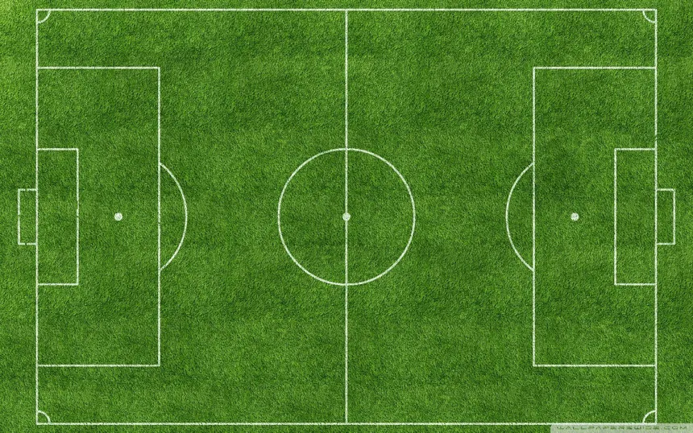
Full-size pitch with floodlights for evening training and fixtures.
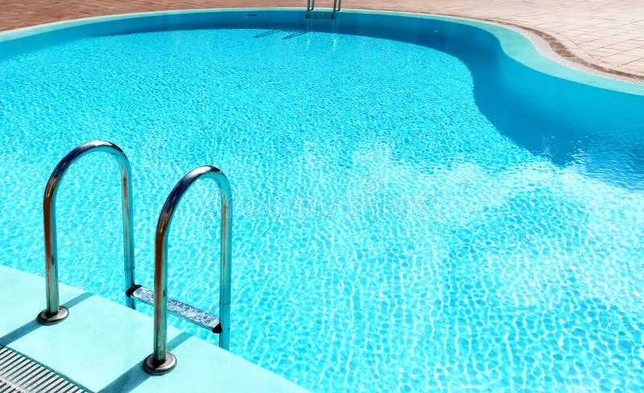
Training pool for competitive swimming, coaching sessions and junior development programmes.
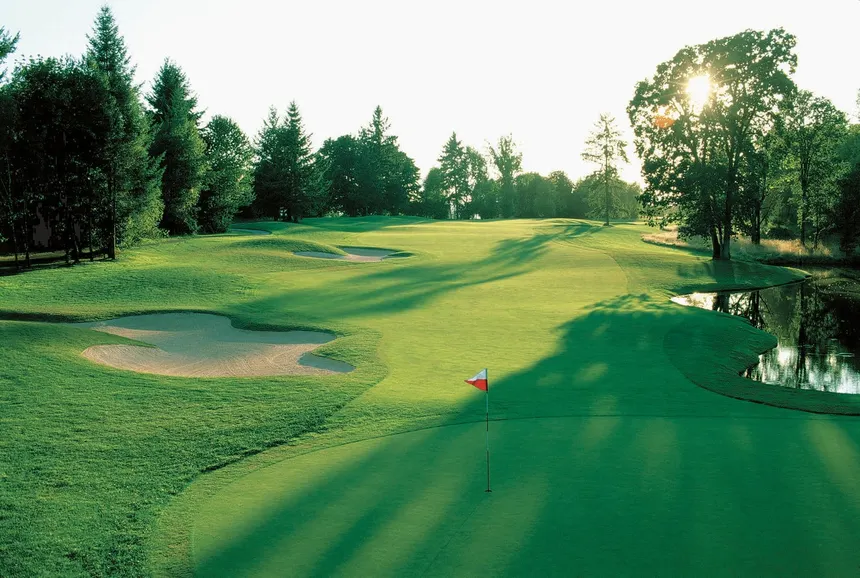
9-hole partnered course for member coaching sessions and club days.
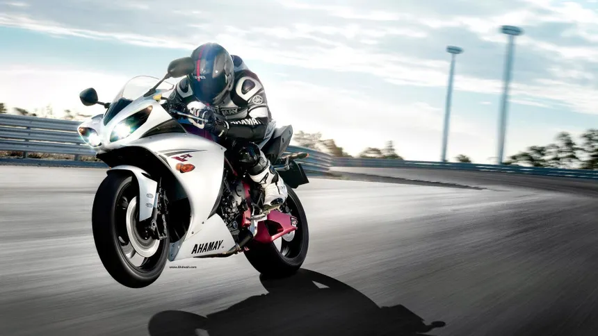
Clubhouse start point for the Ring Circuit, road racing and weekend group rides.
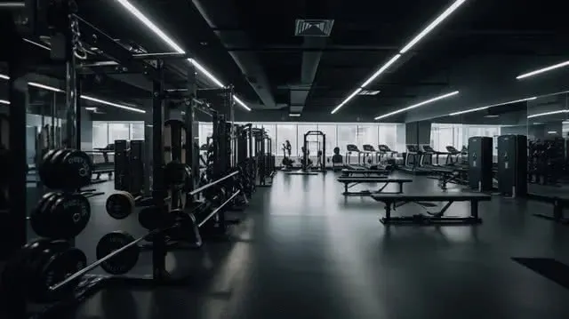
Shared fitness facility used across all six sports for conditioning work.
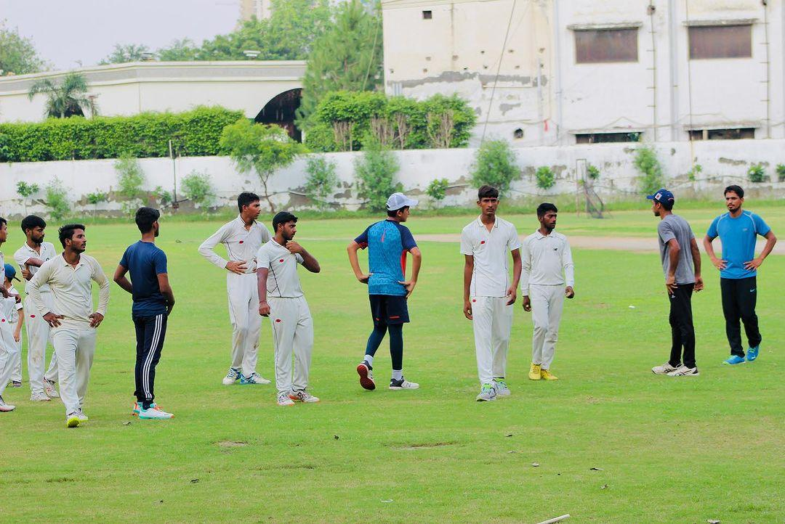
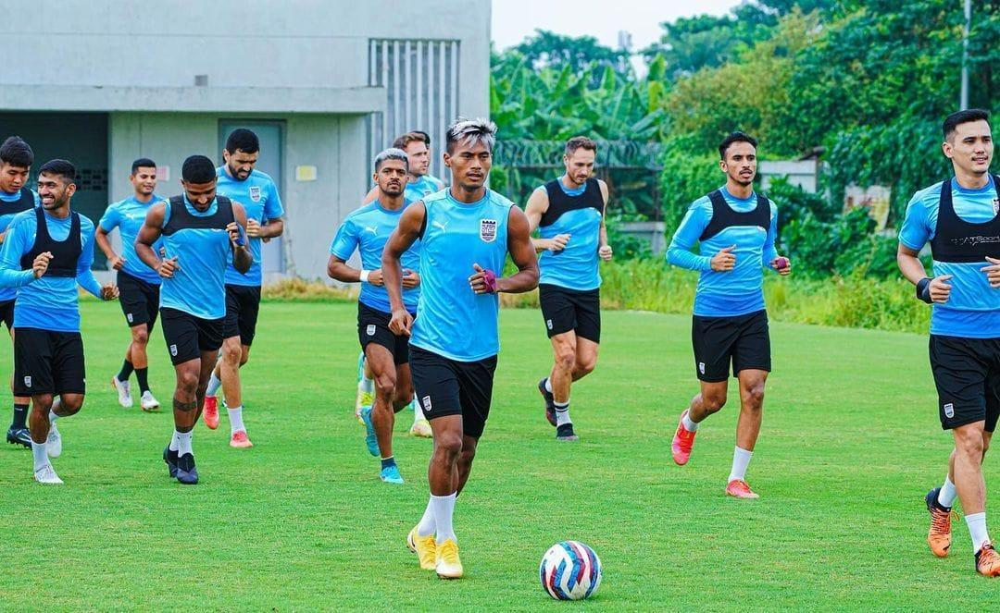
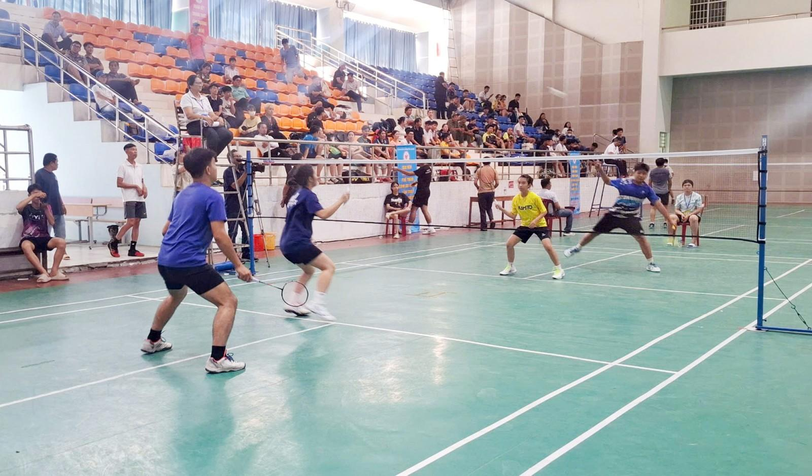
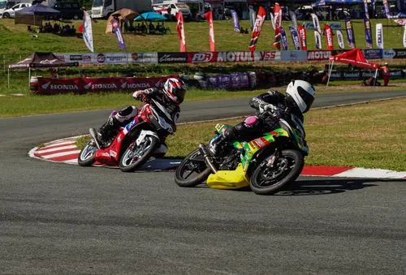
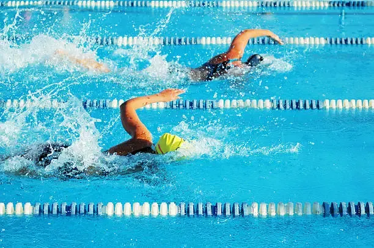
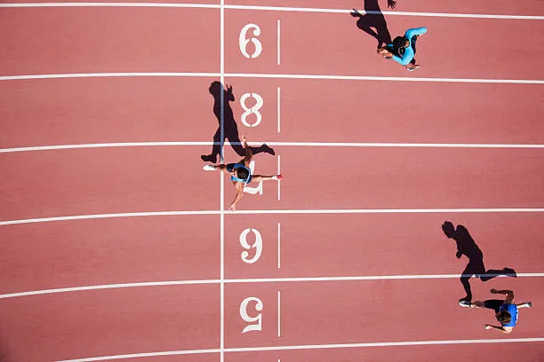
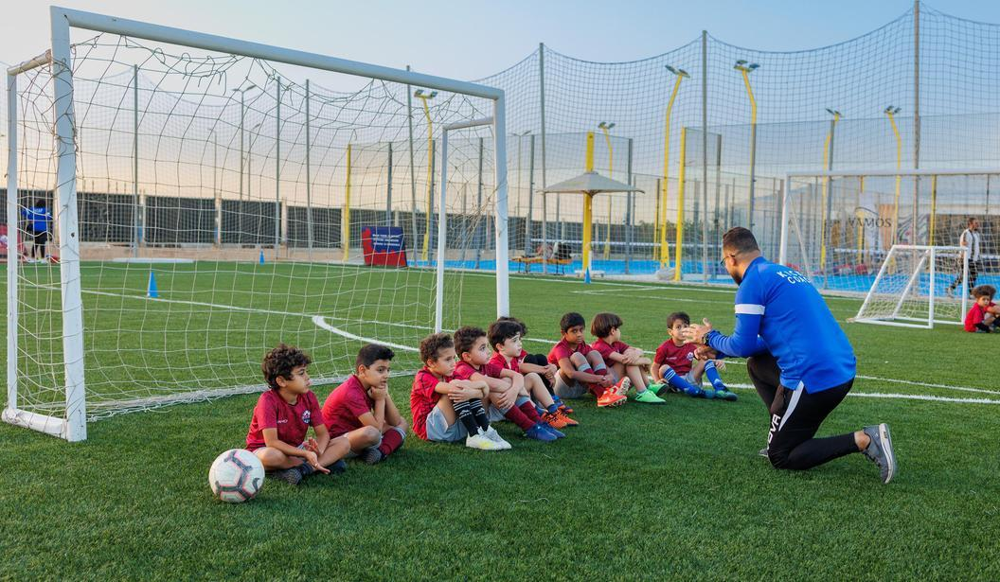
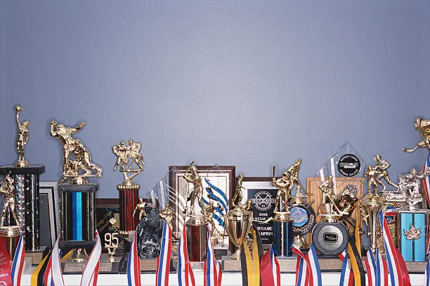